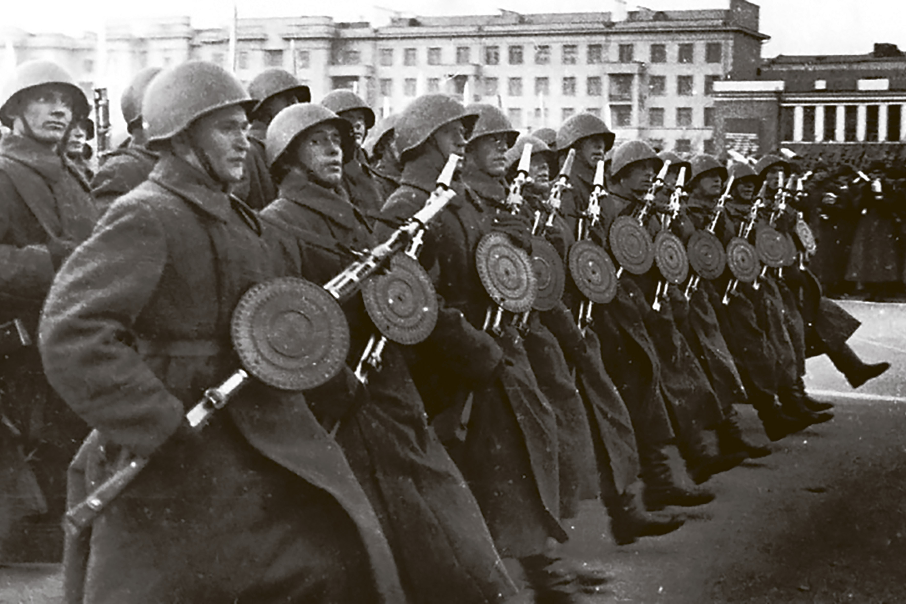

Парад 1941 года
Гитлер намеревался провести на Красной площади парад немецких войск. И парад состоялся, но только не немецкие солдаты маршировали.
Легендарный парад в честь 24 годовщины Октябрьской революции проходил в трех городах Советского Союза – в Москве, Воронеже и Куйбышеве. Однако самая большая мощная колонна прошла именно в здесь, в Запасной Столице. Ради этого парада, многие дивизии были целенаправленно переброшены в Куйбышев с восточных регионов страны. И на то были свои причины.
7 ноября 1941 года прошли колонны войск Красной Армии в Москве на Красной площади. Одновременно парад прошел еще в Воронеже и в «запасной столице» - Куйбышеве. В Куйбышеве в параде приняли участие формировавшиеся в ПриВО 65 и 237 дивизии. Командовал парадом генерал Михаил Пуркаев, а принимал - маршал Климент Ворошилов. На трибунах были Калинин, Андреев, Шверник, Шкирятов, Вознесенский, Первухин, Ярославский. Слева от трибуны располагался дипломатический корпус и журналисты. Возможно, именно для них в Куйбышеве был устроен один из трех парадов - иностранцев надо было убедить, заставить их поверить, что СССР не сломлен.
После военного парада по площади Куйбышева прошла демонстрация трудящихся, которые несли флаги Советского Союза и портреты Ленина и Сталина. Этот парад имел огромное морально-психологическое значение, - рассказывают самарские экскурсоводы. – После него японские атташе отправили депешу своему руководству о том, что нападать на Советский союз слишком рано.
В дни войны проведение военного парада имело большое военно-политическое значение, оказало моральное воздействие большой силы на боевой дух войск, способствовало эмоциональному подъему и укреплению веры в окончательную победу у населения.